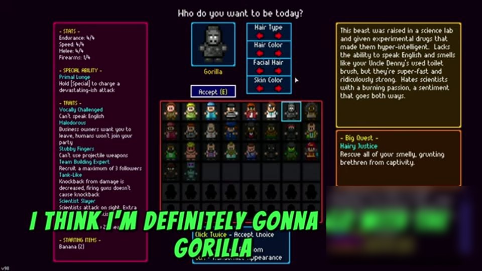
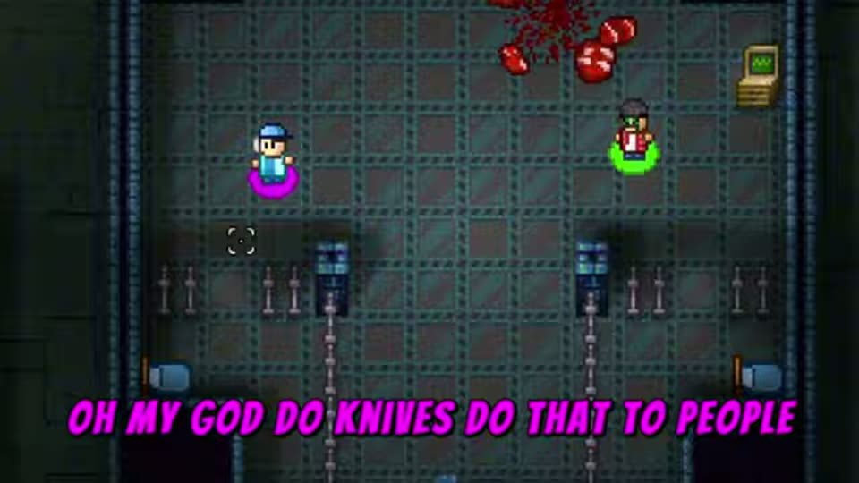
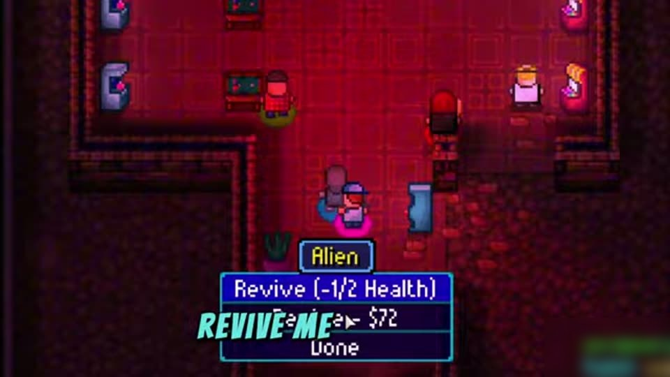
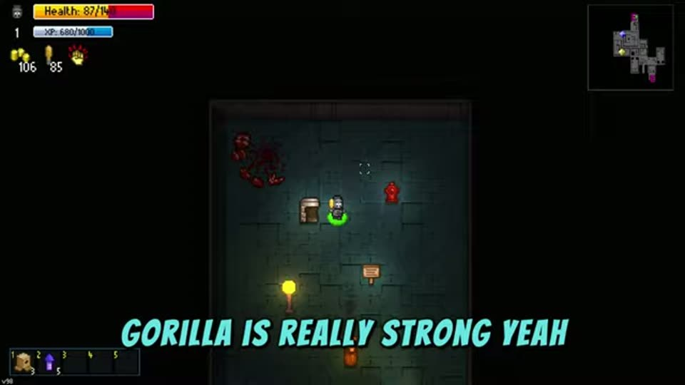

Streets of Rogue review: a gangster, a gorilla and a bear trap I stepped in

Streets of Rogue is a rogue-lite from Matt Dabrowski, published by tinyBuild, where you fight, sneak or hack your way through randomly generated cities. It came out on Steam on July 12, 2019, and you can play it alone or in co-op. I played with two friends in the first run, and a third joined for the second.
My first run went wrong at the start. I was a Gangster, and I chased a friend's Alien character and attacked him before I understood that we were on the same team. Then I smashed a computer with a knife just as another friend was hacking it. Around then I said, "It'll be funny to hear this, but I've never stabbed somebody." Soon after, I killed a scientist, took his key and let a caged gorilla out of its cell.

My first death came fast. I walked through a laser beam down to one health, and an Office Drone punched me to death. A friend gave me half of his health to revive me on the next floor. I found out that a Gangster is supposed to hire other Gangsters, so I paid one to follow me and soon walked around with a whole posse. A killer robot exploded in the middle of a fight and set the building on fire, and later I slipped on a banana peel while running from a mob, and the mob beat me to death.

For the second run I picked the gorilla. The store page pitches a hyper-intelligent gorilla rescuing other caged gorillas to form a small mobilized gorilla army. In my run I freed another gorilla, and it chased down and killed one of my friends. Another friend put a bear trap down to stop it, and I stepped in the trap myself. "Okay, so this game does a really good job of simulating what would happen if an actual gorilla punched somebody in real life. I've exploded like 10 people so far."

I threw a banana peel into a casino doorway and an enemy slipped into a table and died. The run ended when firefighters and cyber police all came for us at the same time and a mine cart ran over what was left of the team.
Streets of Rogue rewards dumb ideas. I spent the first run not knowing what I was supposed to do, and I still had a great time. It is best with friends who can handle being attacked by accident. The gorilla is the right character for me. Store page: Streets of Rogue on Steam
More games I wrecked with friends: the Find the Box hamster flood, Don't Mess With Bober and the Mayhem a la Carte rat army.